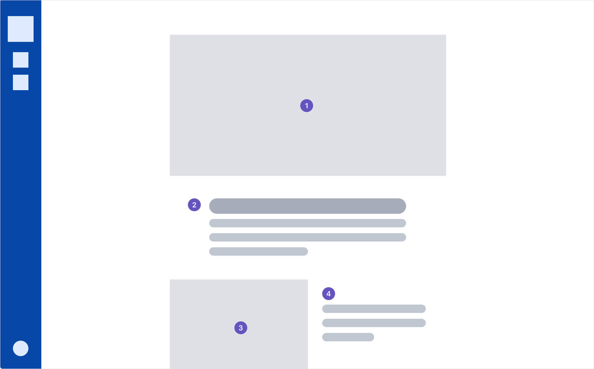
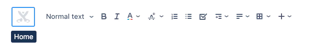
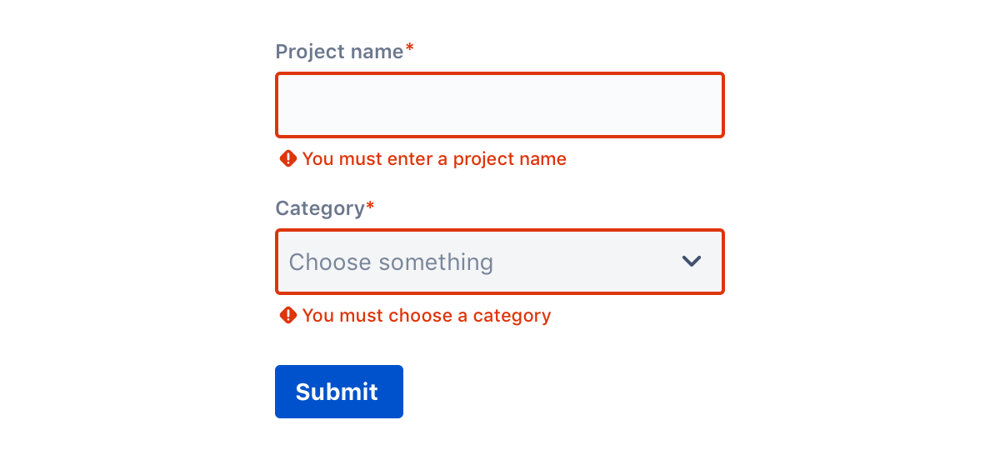
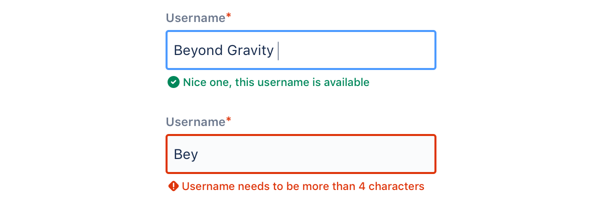

Accessibility
Accessible design lets people of all abilities interact with, understand, and navigate our products.
Products and web properties need to be accessible to everyone, including those with vision, hearing, cognitive, or motor impairments.
Accessible design is everyone's responsibility, from information and user experience design, through to development, and on into help and support. It is about understanding the users' journeys and proactively anticipating their needs.
To make sure products are accessible to everyone, follow the four principles of the Web Content Accessibility Guidelines:
- Perceivable:It can be perceived by at least one of a person's senses.
- Operable:All interactions are operable through a variation of input methods.
- Understandable:Information and operation of the interface must be understandable.
- Robust:Content can be interpreted by a variety of assistive technologies and withstand changes in these technologies.
Structure and hierarchy Copy link to heading
Consistent, clear hierarchy helps people who navigate the page using links or headers. Use headings and titles to outline the page so people can see the structure and how sections relate to each other.
Be predictable with structure and use patterns and layouts familiar to people.
Content should be visible, so avoid putting important information inside accordions.
List by level of importance Copy link to heading
Place items on the page in order of their level of importance so people don't have to search for them.
Have a consistent hierarchy Copy link to heading
Create and maintain a consistent hierarchy so that people can use alternative input methods to move through the page. Headings are in order without skipping levels.
DO
Use a consistent heading hierarchy: H1, H2, H3, H4
DON'T
Use headings out of order: H2, H1, H3, H3
Text scaling Copy link to heading
Test the UI with color correction, magnification, and other accessibility settings to ensure the layout works with assistive settings.
Group similar items Copy link to heading
Group items under titles or headings that clearly communicate the content of the group.
DO
Clear title with related items: Fruit - wildberry, strawberry, blueberries.
DON'T
Vague category with unrelated items: Things - rocket, fuel, bring home milk.
Keyboard navigation Copy link to heading
Some people can't use a mouse and navigate through applications using tools such as a keyboard, mouth wand, or eye tracking system. People should be able to navigate and use the product with a keyboard or screen reader. Make sure anything that can be seen by hovering with a mouse is also accessible to keyboard focus and screen readers.
When creating an application, check if a keyboard can be used to:
- navigate
- perform the same tasks as people who use a mouse
- locate where you are on the page
- tell where the keyboard focus is
Manage focus Copy link to heading
Keyboard focus follows the page as the eye would scan it. Focus travels top to bottom, left to right, moving from most to least important item. People can navigate applications using alternative input methods (D-pads, trackballs, keyboards, and navigation gestures), and the focus flows in a logical order.
When creating an application, check if a keyboard can be used to:
When assessing keyboard focus:
- Be conscious of the order of elements on the page. Do they make sense from the user's perspective?
- Indicate where focus is.
- Avoid using input focus to select, trigger events, or display messages. People may need to navigate through all controls before making changes.
- Keep in mind where the focus moves when the element in focus disappears. People should return to wherever they were before they focused on the element.
Use tooltips Copy link to heading
Tooltips can be activated by keyboard. When an element gets keyboard focus, a tooltip displays. When that element loses focus, the tooltip disappears.
Validate forms inline Copy link to heading
Validate forms inline so keyboard users don't have to navigate far to get feedback.
Ideally, design interactions to prevent errors happening in the first place and help people fix problems as they occur.
Meaningful text Copy link to heading
Consistent and helpful text makes the user interface accessible to people who use a screen reader. Screen readers help people with visual impairments by reading both visible and non-visible alternative text aloud.
All text should support accessibility, whether it's visible (UI labels, headings, buttons, forms, hyperlinks, and help text) or non-visible (alternative text for images and buttons).
Be concise and use plain English Copy link to heading
Keep content and accessibility text concise. People using screen readers hear every UI element read aloud, so the shorter the text, the faster they can navigate the content.
Screen readers can skim more easily and skip irrelevant paragraphs if you keep sentences short and frontload paragraphs with important information.
Plain English helps people skim and digest information faster. It also makes content more accessible to those who speak English as a second, third, or fourth language.
Avoid idioms and always expand acronyms when using them for the first time.
Use consistent labels Copy link to heading
Consistently label elements and components that have the same functionality. When people encounter these elements in different contexts, they should be able to recognize and understand the function or actions of an element. For instance, a menu item that is labeled All sprints should open a page that is titled All sprints. A dialogue with the title Copy page has a button labeled Copy.
DO
Copy a ticket, copy a page
DON'T
Clone a ticket, copy a page
Describe what an element does Copy link to heading
Label elements with action verbs that indicate what happens when the element is selected.
DO
Edit preferences - When read aloud, the text indicates the action.
DON'T
Preferences - Just labeling the element doesn't make it clear what will happen when it is selected.
Buttons Copy link to heading
In buttons, describe what the action does and, if you can, reveal what will happen.
DO
Edit preferences - When read aloud, the text indicates the action.
DON'T
Preferences - Just labeling the element doesn't make it clear what will happen when it is selected.
Hyperlinks and skip links Copy link to heading
Link text should indicate where the link navigates to. When linking text we use “Learn more” along with a description of where we are taking the user. Link your entire message. For in-app or in-product links don’t use a period (full stop) at the end of the sentence.
E.g. Learn more about Jira permissions
Linking the entire message gives users context about the link destination lowering their cognitive load.
These links take a user who is visually impaired through hearing a screen reader repeat “Learn more” at this time while tabbing through a page. Linking the full message also helps navigation using screen readers and allows the text to stand alone.
Add skip links or anchors to help people navigate around content pages.
DO
Learn more about Jira permissions
DON'T
Read more
Images and video Copy link to heading
For important information, use text rather than images. Only use images that usefully add to the text.
Describe non-text elements in the UI or with alternative text so screen readers can succinctly describe images and media.
Avoid moving or flashing images if possible.
Images that contain information Copy link to heading
If an image contains information that can only be understood by seeing the image, then you need to explain the content of the image using alternative text. Follow these guidelines when you write alt text:
- The text should be an adequate replacement for both the content and the function of the image.
- Determine the correct content and then deliver that message as succinctly as possible. Aim for no more than a few words, though sometimes a short sentence or two may be necessary.
- Don't repeat information that is contained in the text found on the page around the image.
- Don't use phrases like "image of ..." or "a photo of ..." to describe the image. This is apparent when using screen readers and the description itself should be enough to replace the meaning of the image.
- If the meaning and content of an image is conveyed by surrounding text, header, or captions, then you might not need as much alternative text.
Decorative images Copy link to heading
If the image is used strictly to make the page pleasant to the eye, doesn't contain a link, and isn't used to deliver information, then include the alt attribute, but leave it empty. For example, alt=""
Complex images Copy link to heading
A complex image could be a diagram, table or chart. Depending on the level of complexity, the image may need text near it explaining the contents, short alt text that complements this and possibly a link to a page with a long text description.
Videos Copy link to heading
Provide transcripts and in-sync captioning. Make sure users can control when the video or gif starts and stops.
Provide audio description for any text displayed in a video.
Include visual cues Copy link to heading
We comply with AA standard contrast ratios. To do this, we choose primary, secondary and extended colors that support usability. This ensures sufficient color contrast between elements so that people with low vision can see and use our products.
Include visual cues Copy link to heading
Don't convey information using color alone. Use multiple visual cues, such as stroke weight, patterns, shape, text, or illustrations to ensure that everyone receives the same information. This helps people who are unable to, or have difficulty with, distinguishing one color from another. This includes people who are color blind, have low vision, or are blind.
For example, these inline validation messages use both color and icons to distinguish severity:
Use high contrast Copy link to heading
High color contrast helps people who are partially or completely color blind see differences between certain colors. It creates a strong visual hierarchy and improves usability for everyone. Make sure that the combination of text and background color do not fall below the WCAG recommended threshold ratio of 4.5:1 for standard text and 3:1 for larger text.
Decorative images and disabled states don't have contrast requirements.
DO
Learn more about Jira permissions
DON'T
Read more
Testing and research Copy link to heading
These guidelines will help improve accessibility in your applications, but they don't guarantee a fully accessible experience. We also recommend you:
- test the entire application and journeys using various assistive technologies and text scaling
- include people with impairments when testing
- ensure the tasks in your applications can be accomplished by anyone, regardless of ability
When in doubt, refer to the Web Content Accessibility Guidelines 2.1.